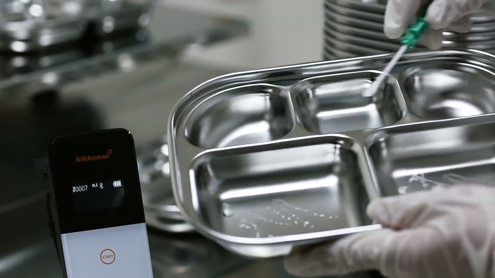

말이 아니라 검사지로 증명합니다.
"깨끗하게 씻었습니다"라는 말은 누구나 할 수 있습니다. THE 좋은식판은 교육·보육기관 안전 기준에 맞춘 정기 위생검사를 시행하고, 검사 항목과 수치를 그대로 원에 전달합니다.

안심 위생 리포트정기 위생검사 결과지 (예시)
일반세균기준 이내
대장균군불검출
잔류세제불검출
ATP 표면오염도적합
검사 항목과 결과는 실제 결과지를 기준으로 원에 전달됩니다.
선생님과 원장님께 드리는
가장 확실한 답
"식판은 어떻게 관리하세요?"라는 학부모 질문에 결과지 한 장으로 답하실 수 있습니다. 원 게시판이나 학부모 알림에 그대로 공유하셔도 됩니다.
- 정기 위생검사 시행 후 결과지 전달
- 교육·보육기관 안전 기준 적용
- 검사 항목과 수치 그대로 공개
무엇을 검사하나요
식기 위생에서 학부모가 가장 걱정하는 네 가지를 봅니다.
일반세균
세척 후 식기 표면에 남은 세균 수를 측정합니다. 고온 살균 건조가 제대로 됐는지 보여주는 기본 지표입니다.
대장균군
분변 오염의 지표균입니다. 식중독 예방의 기준선이며, 불검출이 원칙입니다.
잔류세제
헹굼이 끝난 뒤 식기에 남은 세제 성분을 확인합니다. 아이가 매일 삼키게 되는 양과 직결되는 항목입니다.
ATP 표면오염도
눈에 보이지 않는 유기물 오염을 수치로 즉시 확인하는 검사입니다. 급식 현장 위생 점검에 널리 쓰입니다.